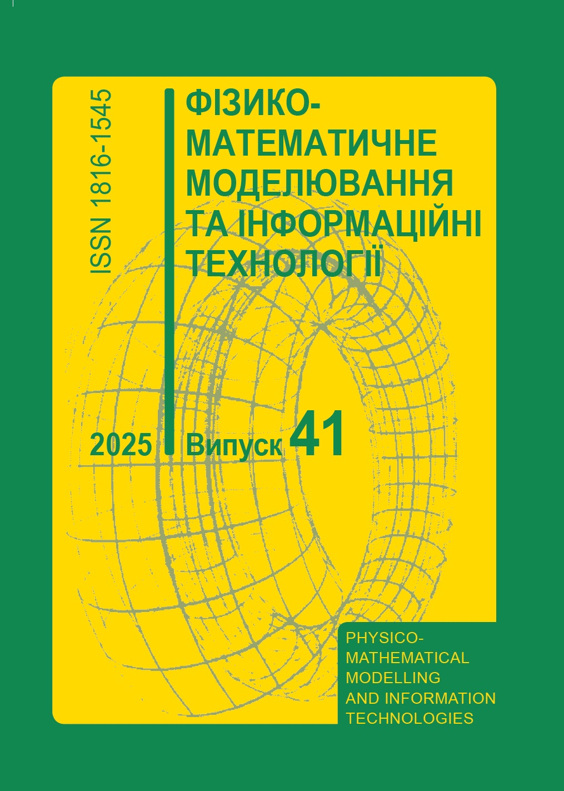

Видання Інституту: періодичні видання

Математичні методи та фізико-механічні поля
Журнал публікує оригінальні, не публіковані раніше наукові статті, присвячені розробці ефективних методів дослідження диференціальних рівнянь із частинними похідними та динамічних систем, операторних методів функціонального аналізу і лінійної алгебри та їх застосувань, постановці та розв’язанню некласичних крайових задач математичної фізики, розвитку кількісної теорії деформації твердих тіл з урахуванням взаємодії полів різної фізичної природи, розробці математичних методів розрахунку, оптимізації і прогнозування деформативності, міцності, довговічності та поведінки механічних систем.

Прикладні проблеми механіки і математики
Науково-теоретичний журнал, що публікує праці з математичного моделювання, механіки деформівних тіл та суміжних областей математики.

Фізико-математичне моделювання та інформаційні технології
Публікуються статті з механіки, фізико-математичного та комп’ютерного моделювання складних неперервно-дискретних систем і процесів